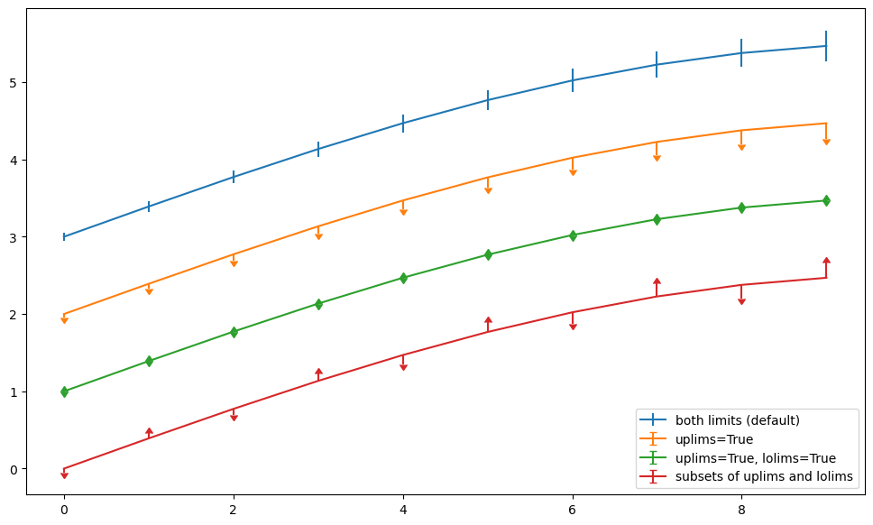

array([[ 0, 1, 2, 3, 4],
[ 5, 6, 7, 8, 9],
[10, 11, 12, 13, 14]])Tutorial: Computations
코드가 표시되는 것을 막음
execute: echo: false
기본적으로 표시 안되게 하고 특정 코드만 표시하려면? 특정코드셀 맨 윗줄에 밑에꺼 붙이면 됨 #| echo: true
코드 접기기능 echo옵션먼저 지우고 시작 밑에 코드 yaml 포맷에 입력 format: html: code-fold: true
Numpy
Matplotlib
Code
import matplotlib.pyplot as plt
fig = plt.figure()
fig.set_size_inches(12,7)
x = np.arange(10)
y = 2.5 * np.sin(x / 20 * np.pi)
yerr = np.linspace(0.05, 0.2, 10)
plt.errorbar(x, y + 3, yerr=yerr, label='both limits (default)')
plt.errorbar(x, y + 2, yerr=yerr, uplims=True, label='uplims=True')
plt.errorbar(x, y + 1, yerr=yerr, uplims=True, lolims=True,
label='uplims=True, lolims=True')
upperlimits = [True, False] * 5
lowerlimits = [False, True] * 5
plt.errorbar(x, y, yerr=yerr, uplims=upperlimits, lolims=lowerlimits,
label='subsets of uplims and lolims')
plt.legend(loc='lower right')
plt.show(fig)
Plotly
Code
Unable to display output for mime type(s): application/vnd.plotly.v1+json